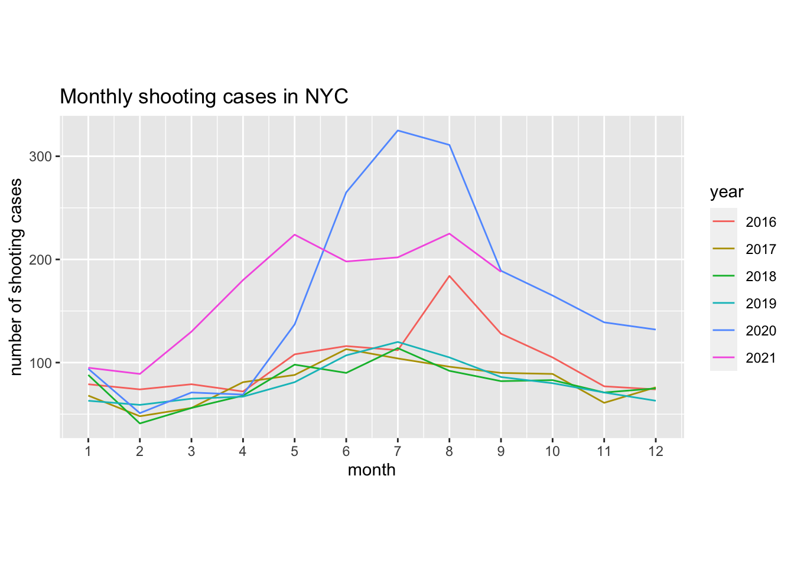
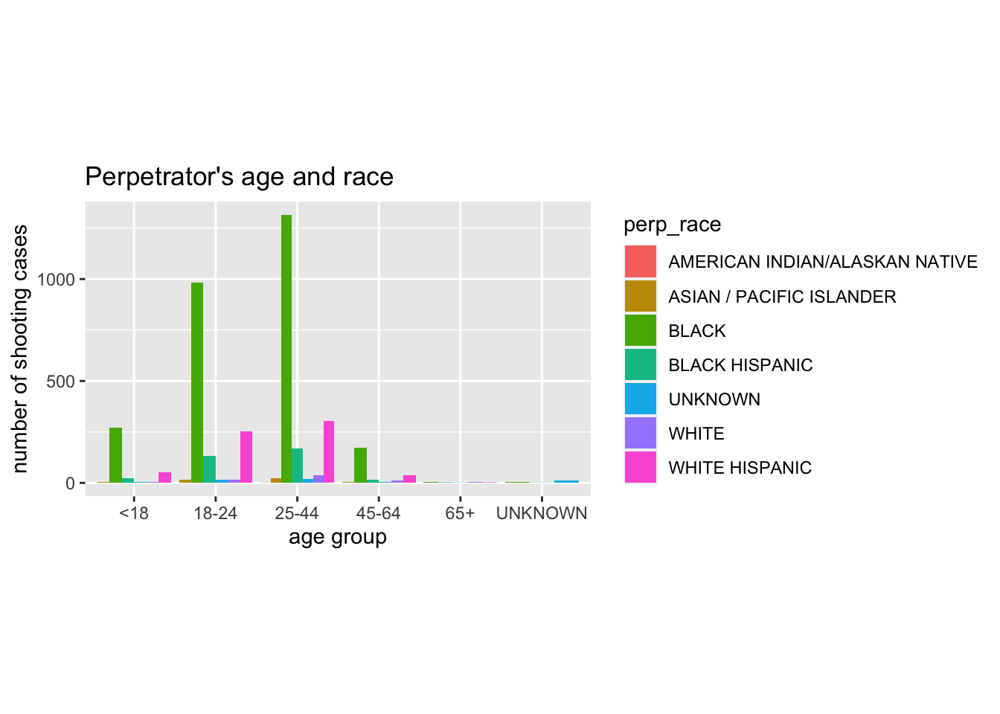
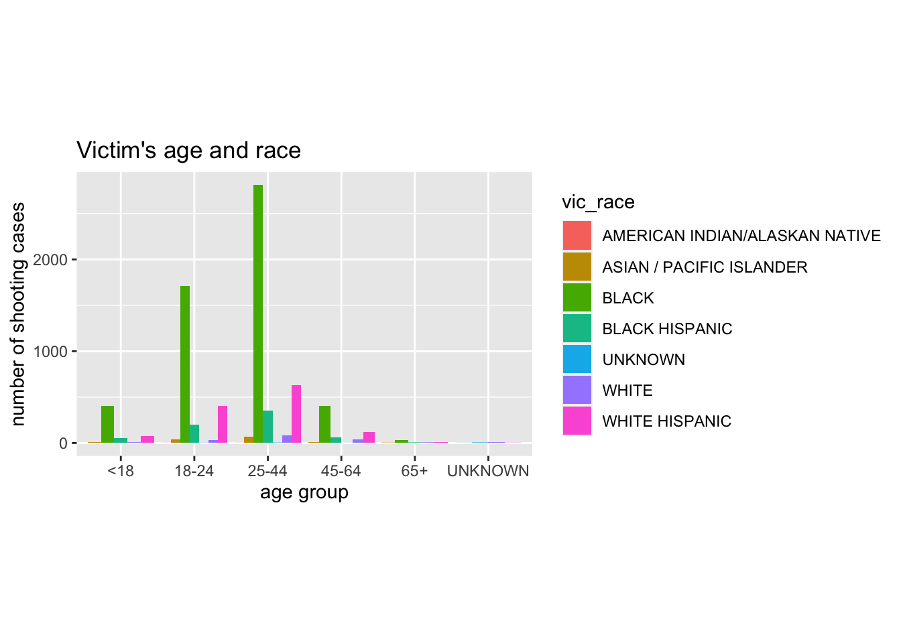
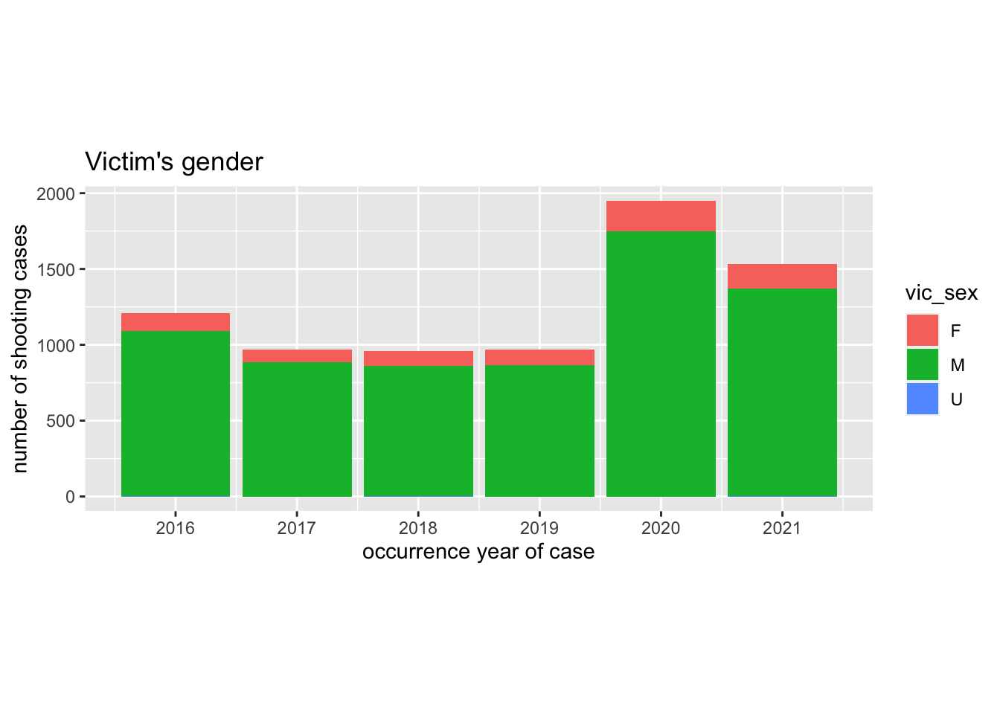

nyc_shooting = read_csv("./modified_data/NYC Shooting Data (2016-2021) with Zipcode.csv")# prepare dataframe
lr_df = nyc_shooting %>%
select(-location_desc, -x_coord_cd, -y_coord_cd, -latitude, -longitude, -lon_lat, -new_georeferenced_column, -zipcode) %>%
mutate(
month = as.factor(recode(month, "January" = 1, "February" = 2, "March" = 3, "April" = 4, "May" = 5, "June" = 6, "July" = 7, "August" = 8, "September" = 9, "October" = 10, "November" = 11, "December" = 12)),
month_date = str_c(month, "-", day)
)year_month_df = lr_df %>%
group_by(year, month) %>%
summarise(n_freq = n()) %>%
mutate(
month = as.numeric(month),
year = as.factor(year)
)
year_month_df %>%
ggplot(aes(x = month, y = n_freq, color = year, group = year)) +
geom_line() + scale_x_continuous(breaks = 1:12) +
labs(
title = "Monthly shooting cases in NYC",
x = "month",
y = "number of shooting cases"
) + coord_fixed(ratio = 0.02)
month_hour_df = lr_df %>%
separate(occur_time, into = c("hour", "min", "sec"), sep = ":") %>%
group_by(month, hour) %>%
summarise(n_freq = n()) %>%
mutate(
hour = as.numeric(hour),
month = as.factor(month)
)
month_hour_df %>%
ggplot(aes(x = hour, y = n_freq, color = month, group = month)) +
geom_line() + scale_x_continuous(breaks = 0:23) +
labs(
title = "Shooting cases in each hour in NYC",
x = "hour",
y = "number of shooting cases"
) + coord_fixed(ratio = 0.1)perp_age_df = lr_df %>%
filter(!is.na(perp_age_group)) %>%
group_by(perp_age_group, perp_race) %>%
summarise(n_freq = n()) %>%
mutate(
perp_age_group = as.factor(perp_age_group)
)
perp_age_df %>%
ggplot(aes(fill = perp_race, x = perp_age_group, y = n_freq)) +
geom_bar(position = "dodge", stat = 'identity') +
labs(
title = "Perpetrator's age and race",
x = "age group",
y = "number of shooting cases"
) + coord_fixed(ratio = 0.0025)
vic_age_df = lr_df %>%
filter(!is.na(vic_age_group)) %>%
group_by(vic_age_group, vic_race) %>%
summarise(n_freq = n()) %>%
mutate(
vic_age_group = as.factor(vic_age_group)
)
vic_age_df %>%
ggplot(aes(fill = vic_race, x = vic_age_group, y = n_freq)) +
geom_bar(position = "dodge", stat = 'identity') +
labs(
title = "Victim's age and race",
x = "age group",
y = "number of shooting cases"
) + coord_fixed(ratio = 0.00125)
perp_sex_df = lr_df %>%
filter(!is.na(perp_sex)) %>%
group_by(perp_sex, year) %>%
summarise(n_freq = n()) %>%
mutate(
perp_sex = as.factor(perp_sex)
)
perp_sex_df %>%
ggplot(aes(x = year, weight = n_freq, fill = perp_sex)) + geom_bar(position = "stack", aes(order = desc(perp_sex))) +
scale_x_continuous(breaks = 2016:2021) +
labs(
title = "Perpetrator's gender",
x = "occurrence year of case",
y = "number of shooting cases"
) + coord_fixed(ratio = 0.0025)vic_sex_df = lr_df %>%
filter(!is.na(vic_sex)) %>%
group_by(vic_sex, year) %>%
summarise(n_freq = n()) %>%
mutate(
vic_sex = as.factor(vic_sex)
)
vic_sex_df %>%
ggplot(aes(x = year, weight = n_freq, fill = vic_sex)) + geom_bar(position = "stack", aes(order = desc(vic_sex))) +
scale_x_continuous(breaks = 2016:2021) +
labs(
title = "Victim's gender",
x = "occurrence year of case",
y = "number of shooting cases"
) + coord_fixed(ratio = 0.00125)
yoy_df = lr_df %>%
group_by(year, month) %>%
summarise(n_freq = n()) %>%
pivot_wider(
names_from = "year",
values_from = "n_freq"
) %>%
janitor::clean_names() %>%
mutate(
x1 = x2017 / x2016,
x2 = x2018 / x2017,
x3 = x2019 / x2018,
x4 = x2020 / x2019,
x5 = x2021 / x2020
) %>%
select(-x2016, -x2017, -x2018, -x2019, -x2020, -x2021) %>%
pivot_longer(
x1:x5,
names_to = "y_o_y",
values_to = "ratio"
)
xlab = c("2017/2016", "2018/2017", "2019/2018", "2020/2019", "2021/2020")
yoy_df %>%
ggplot(aes(x = y_o_y, y = ratio, color = month, group = month)) +
geom_line() +
scale_x_discrete(labels = xlab) +
labs(
title = "Year over Year Case Growth Rate",
x = "year over year",
y = "growth rate"
)nyc_weather_df =
rnoaa::meteo_pull_monitors(
c("USW00094728"),
var = "all",
date_min = "2016-01-01",
date_max = "2021-09-30") %>%
mutate(
tmin = tmin / 10,
tmax = tmax / 10,
tavg = (tmin + tmax) / 2,
ymd = date
) %>%
separate(date, into = c("year", "month", "day"), sep = "-") %>%
mutate(month_date = str_c(month, "-", day)) %>%
select(ymd, year, month_date, tavg)
nyc_weather_df %>%
ggplot(aes(x = ymd, y = tavg)) +
geom_point() +
labs(
title = "Temperature Records in NYC",
x = "date",
y = "temperature average"
) + coord_fixed(ratio = 8)lr_w_df = lr_df %>%
group_by(year, month, day) %>%
summarise(n_freq = n()) %>%
mutate(
ymd = as.Date(str_c(year, "-", month, "-", day))
)
lr_w_df %>%
ggplot(aes(x = ymd, y = n_freq)) +
geom_point() +
labs(
title = "Daily shooting cases in NYC",
x = "date",
y = "number of shooting cases"
) + coord_fixed(ratio = 15)